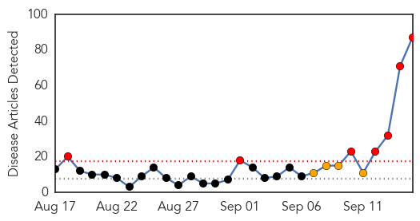
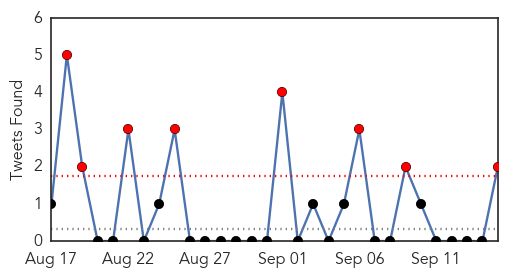

Dengue Fever
30-Day Web Trend
7 alerts, 4 warnings

30-Day Twitter Trend
3 alerts, 0 warnings

Article Locations

Article Confidences

Top Articles:
- 0.999
- Cases of Dengue Fever in Taiwan takes toll SouthEast ASIA News
- 0.996
- Dengue scare grips Capital
- 0.995
- What are the symptoms
- 0.995
- Cases of Dengue Fever Multiply in Southern Taiwan
- 0.993
- Sporadic rain causes rise of dengue cases in Mumbai
- 0.992
- Pb, Har on alert as dengue scare spreads
- 0.992
- Punjab, Haryana On Alert As Dengue Scare Spreads
- 0.990
- All You Need To Know About Dengue
- 0.987
- India's New Delhi faces dengue fever outbreak
- 0.987
- Delhi faces dengue fever outbreak
- 0.987
- Death toll from dengue rises to 9 in Indian capital - Xinhua
- 0.985
- Punjab, Haryana on alert as dengue scare spreads
- 0.984
- Delhi battles dengue fever surge
- 0.981
- Hospitals rush to ready 'disaster ward' beds as dengue grips Delhi
- 0.981
- Dengue out of control, no chutti for doctors
- 0.976
- Dengue fever firewall to be set up: Mao
- 0.971
- Dengue claims second life in ‘fully prepared’ Ghaziabad
- 0.969
- Union Health Minister to hospitals No Dengue patient to be denied
- 0.968
- Dengue menace in Delhi: AAP government caught napping as toll climbs
- 0.966
- Delhi running out of hospital beds as dengue cases cross 1,800
- 0.964
- Dengue outbreak: Delhi's hospitals to get 1,000 more beds, SE Asia News & Top Stories
- 0.964
- Dengue claims 15-yr-old boy in Ahmedabad
- 0.961
- India cancels leaves of doctors in Delhi in case of possible dengue outbreak - Xinhua
- 0.958
- Dengue scare grips Delhi, 613 fresh cases in a week
- 0.957
- Hospitals in line of fire
- 0.956
- Parents commit suicide as son dies of dengue
- 0.953
- Delhi grapples with dengue outbreak, 9 dead, more than 1,800 affected
- 0.945
- Union Health Minister reviews preparedness on dengue in Delhi – The Financial Express
- 0.941
- Punia urges Centre and Delhi Govt. to work together to end dengue menace
- 0.936
- 'Worst is yet to come': Here's what you need to know about Delhi's dengue crisis
- 0.936
- Executive Yuan forms command center to combat dengue fever
- 0.934
- 1800 dengue patients, full force Fumigation to kill mosquitoes in Delhi
- 0.933
- Rein in private hospitals overcharging dengue patients: JP Nadda to Delhi government
- 0.933
- Rein in pvt hosps overcharging dengue patients: Nadda to Delhi
- 0.930
- Haryana hospitals on high alert with rising dengue cases
- 0.926
- Rein In Private Hospitals Overcharging Dengue Patients: Nadda To Delhi Govt
- 0.923
- Dengue strikes Delhi, govt scrambles to tackle the situation
- 0.923
- Six-yr-old dies of dengue after hospitals reject him
- 0.923
- North MCD asks Kejriwal to own responsibility for dengue deaths
- 0.910
- Delhi Government Launches 24-Hour Dengue Helpline 011-23307145
- 0.909
- Rein in private hospitals overcharging dengue patients: J P Nadda to Delhi Government
- 0.896
- Rein in private hospitals overcharging dengue patients: JP Nadda to Delhi government
- 0.892
- Rein in private hospitals overcharging dengue patients
- 0.883
- 6 tips to fight dengue at home
- 0.883
- Another child suffering from dengue dies in Delhi after being turned down by five hospitals
- 0.883
- Health Minister Nadda assures full support to Delhi Govt. to tackle dengue problem
- 0.879
- Delhi orders extra hospital beds after dengue outbreak
- 0.878
- Dengue: Act against refusal, overcharging by hospitals, Centre asks Delhi Govt
- 0.878
- Delhi's Biggest Dengue Crisis in 5 Years
- 0.877
- Region warned about severe El Nino
Showing top 50 articles...
Top Tweets:
-
No tweets found for Sep 15, 2015
Unknown
30-Day Web Trend
0 alerts, 0 warnings

30-Day Twitter Trend
8 alerts, 0 warnings

Article Locations


Article Confidences

Top Articles:
- 0.988
- Napa County Public Health offers free flu shots starting Saturday
- 0.963
- Flu shot a must for moms-to-be
- 0.939
- Salmonella outbreak investigation at Burnside Hospital rules out imported fish
- 0.921
- Chronic Lyme Disease: A silent epidemic the government chooses to ignore -- Health & Wellness -- Sott.net
- 0.900
- Treatment of children with hand-foot-mouth disease being delayed
- 0.866
- Pope, at UN, criticizes greed at expense of world's poor
- 0.860
- Untitled Article
- 0.837
- Outbreak turns consumers away from pork , Business, Phnom Penh Post
- 0.817
- Bluetongue in France; 1.3m doses of vaccine made available
- 0.815
- SkyscraperCity
- 0.792
- Las negociaciones sobre Brexit: ¿ajustando Europa a la opinión pública británica?
- 0.789
- PAHO donates medical supplies to Dominica in aftermath of Tropical Storm Erika - Dominica
- 0.783
- USGS Release: Science Confirms Successful Strategy to Protect Threatened Steelhead from Virus (9
- 0.759
- Bluetongue outbreak in France puts UK farmers on alert
- 0.759
- Everything2.com
- 0.756
- DRC: MSF travels the extra mile to treat sleeping sickness - Democratic Republic of the Congo
- 0.753
- Factors for higher risk of death following hip fracture surgery than hip replacement
- 0.749
- ISIS Has a New Enemy... And Its Not What You May Think
- 0.719
- DRC: MSF travels the extra mile to treat sleeping sickness
- 0.703
- 13 babies test positive for TB
- 0.694
- KOTATV.com Rapid City, Black Hills, So Dak. Gillette Sheridan KOTA Territory News
- 0.689
- Experts question the evidence underpinning e-cigarette recommendations
- 0.680
- Sick? Go easy on those pills
- 0.670
- MSF treats sleeping sickness in remote DRC areas
- 0.657
- Manufactured epidemics: Big Pharma's denial of truth behind Polio puts human species at risk
- 0.655
- Pregnant nurse who refused flu shot fired -
- 0.654
- Wet weather blamed for record human plague cases in Colorado
- 0.649
- Sorry, deze pagina kon niet gevonden worden.
- 0.636
- AMLSN identifies mismanagement of human resources, others as bane of health sector
- 0.631
- 2015 September 15 « nuclear-news
- 0.625
- India’s rabid dog problem is running the country ragged
- 0.612
- From River to Tap: Invisible dangers lurk in untreated water
- 0.592
- Health officials renew fight against cross-border malaria transmissions in Zambia
- 0.591
- Louisville doctor opens women's cancer screening clinic in Haiti
- 0.586
- France to vaccinate livestock following bluetongue outbreak
- 0.575
- City officials lift warning, boil order issued for bacteria found in drinking water
- 0.575
- City officials lift warning, boil order issued for bacteria found in drinking water
- 0.575
- Can going to the dentist give you Alzheimer’s? The lethal brain disease could be transmitted by contaminated instruments
- 0.566
- The Polio Vaccine Continues to Spread Polio and Harm People in Poor Countries
- 0.553
- Understanding Your Electronic Medical Records – US News
- 0.551
- Texas Couple File Yet Another Salmonella Lawsuit Against Cucumber Distributor
- 0.549
- Madagascar plans to immunize 11.3 mln children against poliomyelitis --China Economic Net
- 0.532
- Prescriptions for Health: Ear infections are common in children
- 0.509
- How doctors and nurses are 'walking on by' as patients are dying
- 0.509
- Drive-through flu vaccination clinic returns
- 0.501
- Fight against TB in Papua New Guinea: 'Embarrassment of riches' moment?
Top Tweets:
- 0.820
- MERS: today's Riyadh cases are health workers. Good infection control would protect HCWs; should be in place this late in an outbreak. 2/2
- 0.575
- RT: FLU SCAN: H5N1 outbreaks in Nigeria; Flu vaccine and febrile seizures http://t.co/ASKdyw2BNM